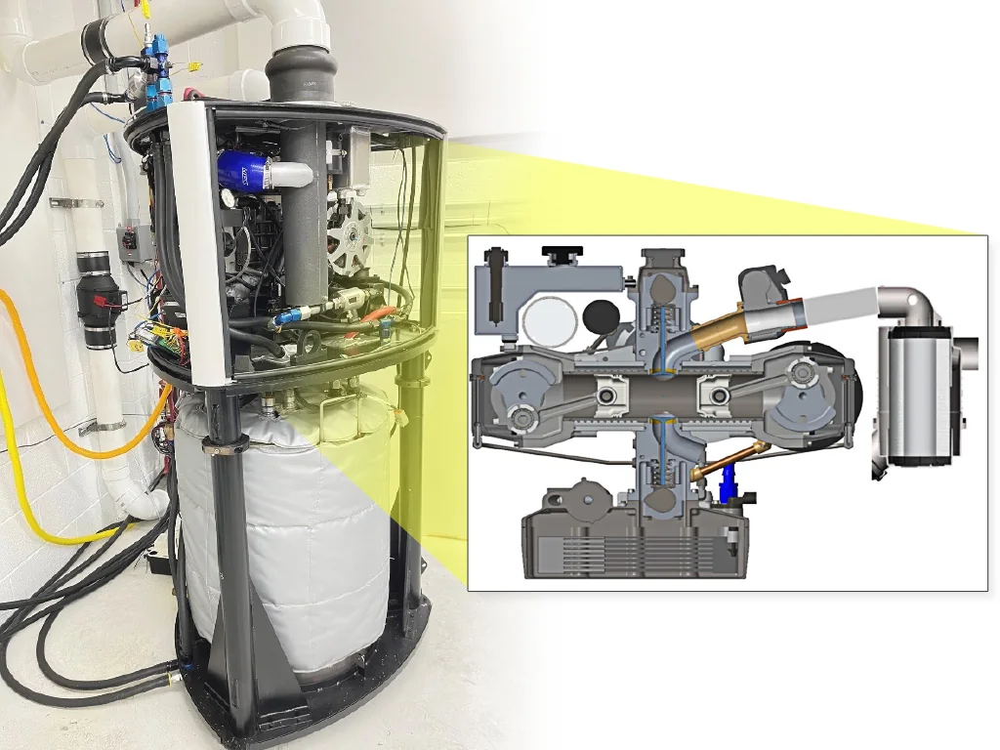
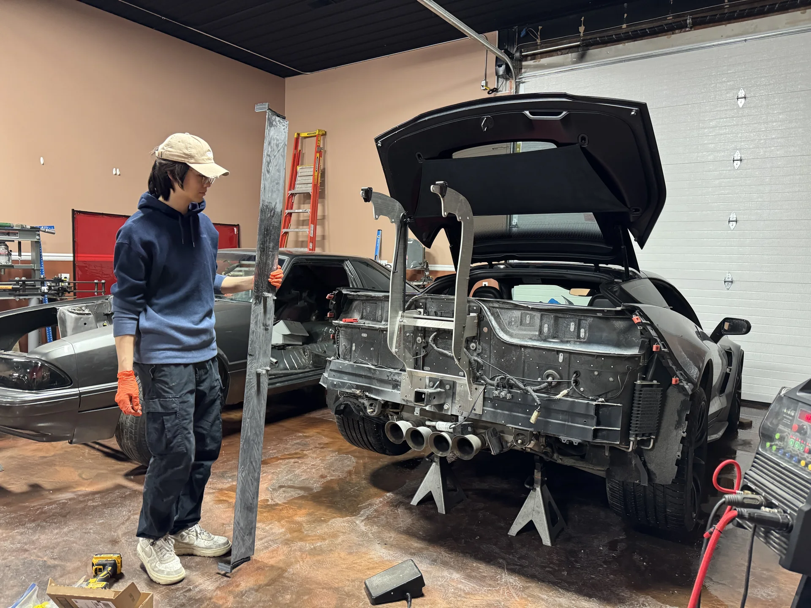
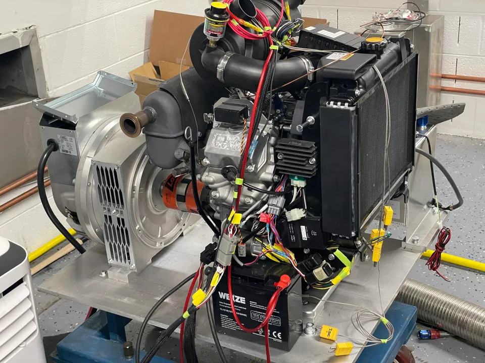
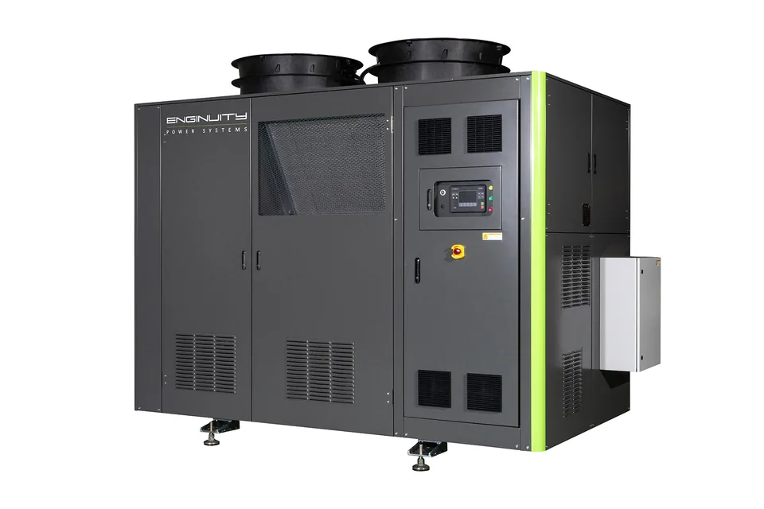
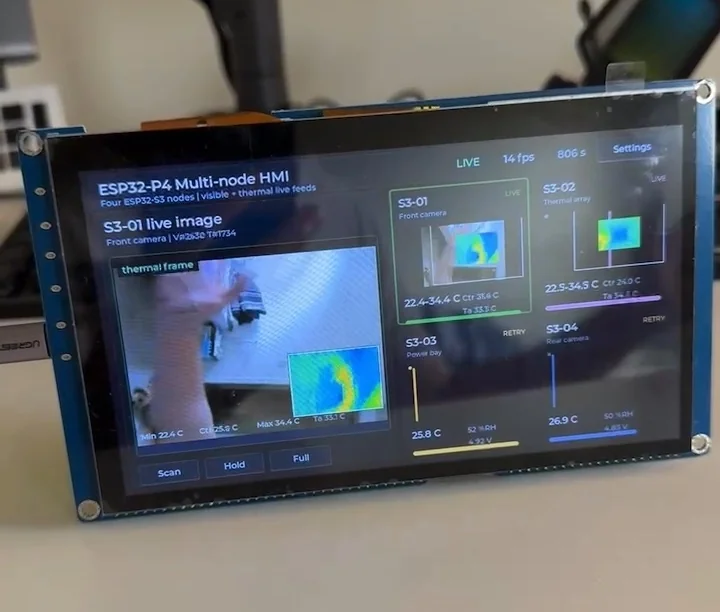

CHP / MICROGRID · SYSTEMS INTEGRATION · VALIDATION
I turn complex energy hardware into working systems.
Energy systems integration—from prototype to validation and field support.





MOTORSPORT · VEHICLE SYSTEMS · EMBEDDED CONTROLS
I design, build, instrument, and validate the whole system.
Active aero, embedded controls and sensing—built and tested on my C7.
CHP / MicroGrid Engineering
Professional Work
01 · PRODUCT DEVELOPMENT
E8kW Micro-CHP
- Modbus SOC → ECU control
- Cooling, exhaust & packaging

02 · TEST INFRASTRUCTURE
Test Platforms & Load Emulation
- Engine / PMG benchmark build
- AC dyno & load emulation

03 · MEASUREMENT & DEBUGGING
DAQ & Measurement Hardware
- Dewesoft acquisition
- Custom signal conditioning

04 · POWER-SYSTEM VALIDATION
Hybrid Inverter & BESS
- AC / DC power-path tests
- Transfer & charging response

05 · FIELD & PRODUCT ENGINEERING
E200 Commissioning
- Radiator PID commissioning
- ComAp integration & updates
06 · CONNECTED CONTROLS & SERVICE
ComAp & Remote Support
- 4G / AirGate / WebSupervisor
- Remote diagnostics & service
Motorsport / Vehicle Systems Engineering
Personal Projects
01 · BUILD
C7 Active Aero
- Composite aero & fabrication
- Servo speed / torque evaluation
02 · CONTROL
CAN / ESP32 Controller V2
- Custom PCB & CAN integration
- Feedback, watchdog & STOP

03 · MEASURE
Tire-Thermal Sensing
- Infrared sensing & iOS HMI
- Bench prototype

04 · VALIDATE
Track Validation
- V1 active aero track tested
- PDR / Pi Toolbox review
01 · PRODUCT DEVELOPMENT
E8kW Micro-CHP
My work
- Arduino / Modbus control: battery SOC → engine throttle.
- 3D-printed exhaust, cooling parts and stator fit-check mockup.
- Long-reach spark-plug development for the 8 kW engine.
Validation
- Signal debugging, fit checks and engine dyno testing.
- Inverter battery SOC
- Arduino · Modbus logic
- ECU · more / hold / less throttle
02 · TEST INFRASTRUCTURE
Test Platforms & Load Emulation
My work
- Independently built the Kawasaki / PMG base, coupling and controls.
- Designed, machined and assembled an AC dynamometer.
- Built thermal-load hardware for mCHP testing.
Validation
- Benchmarked efficiency, noise, power quality and ripple.


03 · MEASUREMENT & DEBUGGING
DAQ & Measurement Hardware
My work
- Built Dewesoft measurement workflows.
- Designed and assembled signal-conditioning / amplifier hardware.
- Used synchronized waveforms to compare operating behavior.
Validation
- Bench and system measurements supported integration decisions.


04 · POWER-SYSTEM VALIDATION
Hybrid Inverter & BESS
My work
- Built instrumented generator / inverter / battery test setups.
- Measured transfer timing, ripple, efficiency and charging behavior.
- Recommended power-path and control architecture changes.
Validation
- Compared bypass, transfer and load response across configurations.

05 · FIELD & PRODUCT ENGINEERING
E200 Commissioning
My work
- Implemented radiator controls and tuned PID during commissioning; assembly assistance provided.
- Integrated ComAp IG1000 / IG500 controls and diagnosed CAN / Ethernet issues.
- Supported backups, updates and verification for the first field units.
Validation
- Reviewed process trends, controller configurations and post-update behavior.
06 · CONNECTED CONTROLS & SERVICE
ComAp & Remote Support
My work
- Connected ComAp controllers through 4G, AirGate and WebSupervisor.
- Defined remote-access, troubleshooting and update workflows.
- Investigated API data and wrote field-service documentation.
Validation
- Checked connectivity and available controller values for diagnostics.
CHP / MicroGrid · Selected Media
Selected hardware, controls and test work.
01 · BUILD · MECHANICAL DESIGN · FABRICATION
C7 Active Aero
Built hardware · Servo bench + road evaluation
My work
- Prototyped wing geometry, brackets and packaging with 3D prints.
- Built carbon-composite aero, aluminum hardware and actuation.
- Bench-tested a faster servo alternative to linear actuators.
Validation
- Road tests exposed insufficient holding torque and no self-locking.


02 · CONTROL · EMBEDDED SYSTEMS · DRIVER HMI
CAN / ESP32 Controller V2
V2 prototype · Bench + road tested
My work
- Designed the PCB; hand-soldered, integrated and debugged the prototype.
- Connected ESP32 / MCP2515 CAN to driver and vehicle inputs.
- Implemented position feedback, watchdog and STOP priority.
Validation
- V2: bench + road tested; not yet track-tested.


03 · MEASURE · INSTRUMENTATION · THERMAL SENSING
Tire-Thermal Sensing
Thermal sensing · Bench prototype
My work
- Bench-tested a four-node visible / infrared concept with an ESP32-P4 HMI.
- Refined the direction to infrared-only sensing with an iPhone / iPad HMI.
- Explored suspension travel and strain / HX711 load sensing.
Validation
- Thermal sensing remains a bench prototype; P4 media shows the earlier architecture.

04 · VALIDATE · TRACK DEVELOPMENT · ITERATION
Track Validation
V1 active aero · Track tested
My work
- Tested the C7 at Gingerman and Grattan; reviewed PDR / Pi Toolbox data.
- Investigated aero balance, ride-height sensitivity and understeer.
- Performed trackside troubleshooting, repairs and setup checks.
Validation
- V1 active aero: track-tested. V2 controller: bench + road only.


Track Video
See the development platform being used.
Real track use is the final proof point: hardware, controls, setup, data, and driver feedback all meet here.
On-track development video 02
Motorsport · Selected Media
Selected development work.
Build · active aero · fabrication
Prototype failures, composite work, fit checks, front aero, final hardware, and fabrication.
Control · PCB · HMI
Controller design, board development, driver interface, and actuation testing.
Validate · track development
Gingerman, Grattan, trackside work, service, and on-track validation.
Measure · instrumentation · thermal imaging
Camera integration, tire-thermal development, and distributed sensing.